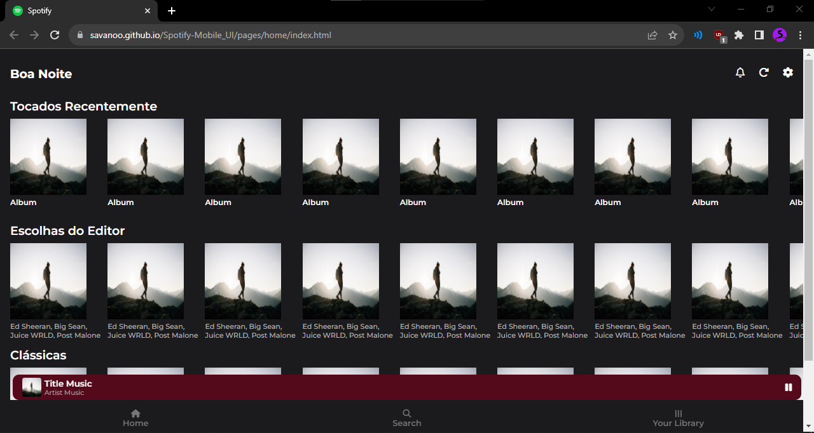

Projetos
-
GitFólio
Um projeto que recebe o usuário GitHub e
mostra todos os seus repositórios podendo
acessar o deploy ou link do projeto.
Tecnologias: NextJs, ReactJs,
Tailwind e
Git.
-
Twitter Interface
Replica da Interface do Twitter com as
possibilidades de escrever e apagar twites
Tecnologias: Html, CSS, JavaScript e
Git.
-

Spotify Mobile
Interface do Spotify mobile para estudo
de responsividade
Tecnologias: Html, CSS, JavaScript e
Git
-
Pokedex Master
Construção de uma Pokedex que consome de
uma Api os dados de cada pokemon
Tecnologias: Html, CSS, JavaScript e
Git.
-

Dev Pass
Um projeto coletivo de um produto,
elaborado para um trabalho da faculdade, é um prototipo de uma rede social voltada a
desenvolvedores
Tecnologias: Html, CSS, JavaScript e
Git.